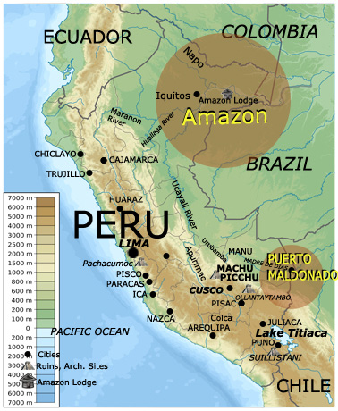
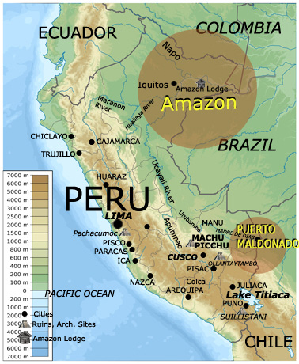

Luxury and First-Class AccomModations
Peruvian amazon tours - tambopata or iquitos
Tours through Cusco or Machu Picchu east or north, the trails lead down from the Andes to the Amazon region of Peru. The river that runs past Machu Picchu feeds east into the Amazon tributaries that eventually pass through Peru into Brazil and on to the Atlantic Ocean, several thousand miles to the east.
The beautiful Peruvian rivers that flow east past Machu Picchu reach the town of Puerto Maldonado, about an hour flight east from Cusco, and to Iquitos much further to the north and close to the border with Brazil. From Cusco, take a flight to the Puerto Maldonado and a transfer to river lodges. The average stay in the Amazon is for three or four nights with two or three full days of jungle exploration. All meals are included at the lodges. There are several lodges available in the area of Puerto Maldonado, including Reserva Amazonica, with lodges located on the river bank or near an Amazon lake. Mosquitos are rarely a problem. In the area of Iquitos, travelers must take a flight from Lima, as there are no connecting flights between Cusco / Machu Picchu and Iquitos. In the area of Iquitos there are also several lodges available, including the Explorama Lodge, Mayuna as well as luxury-class river boats that sail from Iquitos up the river for several days.
 
